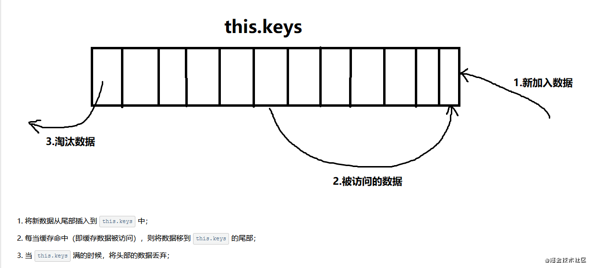

vue
页面 v-for 中修改 item 属性值后页面 v-if 不改变的问题
添加 this.$forceUpdate();进行强制渲染，效果实现
vue-cli 显示 webpack 配置文件命令：
vue inspect --mode=development > webpack.dev.js
vue inspect --mode=production > webpack.prod.jsvue 不兼容ie哪个浏览器？
vue 不兼容ie8，因为在vue中的数据绑定、数组代理使用的defineProperty是es5的语法，不支持ie8
git
git reset
–hard : 回退版本库，暂存区，工作区。（因此我们修改过的代码在本地就没了）
–mixed: 回退版本库，暂存区。(–mixed 为 git reset 的默认参数，即当任何参数都不加的时候的参数)
–soft: 回退版本库。
js
Math.round/ceil/floor
Math.round(); // 四舍五入
Math.ceil(); // 向上取整
Math.floor(); // 向下取整promise
手机
安卓手机文本框获取焦点后，键盘把文本框挡住了
window.addEventListener("resize", function() {
if (
document.activeElement.tagName === "INPUT" ||
document.activeElement.tagName === "TEXTAREA"
) {
if ("scrollIntoView" in document.activeElement) {
document.activeElement.scrollIntoView();
} else {
document.activeElement.scrollIntoViewIfNeeded();
}
}
})iphone x 高度:100%; 兼容设置
- html 代码里面添加 viewport-fit=cover ，这个 ios11 的新属性可以使得页面内容完全覆盖可视窗口
<meta name="viewport" content="width=device-width, viewport-fit=cover"> - 将页面主体设置在安全区域内
这一步视实际场景而定，可以不设置，带来的影响就是会出现底部区域的内容会被挡住；
env() 和 constant()是IOS11新增的css函数，有四个预定义的变量safe-area-inset-bottom、safe-area-inset-top、safe-area-inset-left、safe-area-inset-right，分别是安全区域到各边界的距离，此时我们只需要关心afe-area-inset-bottom(横竖屏的情况下是不一样的)。对于不支持这两个属性的情况，浏览器会忽略。
注意，constant()在IOS11.2之后是不可使用的，因此要向后兼容，即env()，且二者位置不可调换；
constant(): 兼容IOS < 11.2
env(): 兼容IOS >= 11.2body { padding-bottom: constant(safe-area-inset-bottom); padding-bottom: env(safe-area-inset-bottom); } - 设置目标元素(fixed)的高度
对于目标元素，可设置bottom、padding-bottom、margin-bottom 均可：.fixed { bottom: constant(safe-area-inset-bottom); bottom: env(safe-area-inset-bottom); }
- 或者新增一个height = constant(safe-area-inset-bottom)空白区块亦可，方案多样。
别忘了使用 @supports
一般我们只希望 iPhoneX 才需要新增适配样式，我们可以配合 @supports 这样编写样式：
@ supports (bottom: env(safe-area-inset-bottom)) {
div {
margin-bottom: env(safe-area-inset-bottom);
}
}浏览器
浏览器是60Hz的刷新率，每16ms才会更新一次
面试题
- vue key 作用 diff 算法
- vue 组件传参
- 实现 promise.allsettled
- css 垂直水平居中
- webpack 相关
- 闭包
- 原型链
- commonjs 和 es6 模块的区别
- 浏览器缓存
- 首屏加载
- 新需求下来，要做哪些准备
- babel webpack
- webpack 的 plugin 跟 loader
- [‘1’, ‘2’, ‘3’].map(parseInt) 结果是什么
- flex 与 grid
vscode 插件
Npm Intellisense可自动完成导入语句中的 npm 模块Better Comments丰富注释颜色，让注释也具有生命力，如需自定义样式，需要写入配置代码Partial Diff文本对比工具，右击使用
算法
LRU 算法是什么

LRU 的核心思想是如果数据最近被访问过，那么将来被访问的几率也更高，所以我们将命中缓存的组件 key 重新插入到 this.keys 的尾部，这样一来，this.keys 中越往头部的数据即将来被访问几率越低，所以当缓存数量达到最大值时，我们就删除将来被访问几率最低的数据，即 this.keys 中第一个缓存的组件。
微信小程序
微信开发者工具配置
{
...
"editor.wordSeparators": "`~!@#$%^&*()=+[{]}\\|;:'\",.<>/?",// 双击选中连字符
"editor.formatOnSave": true, // 保存后实现自动格式化
}
背景图不显示
本地资源图片无法通过 WXSS 获取
background-image : 可以使用网络图片，或者base64，或者使用
image跟view标签上下会有间隙
原因：
图片文字等inline元素默许是跟父级元素的baseline对齐，而baseline又和父级底边有必定间距解决方案
- 方法一 将图片转换为块级对象即，设置img为：
display:block; - 方法二 设置图片对齐方式
vertical-align: top;
- 方法一 将图片转换为块级对象即，设置img为：